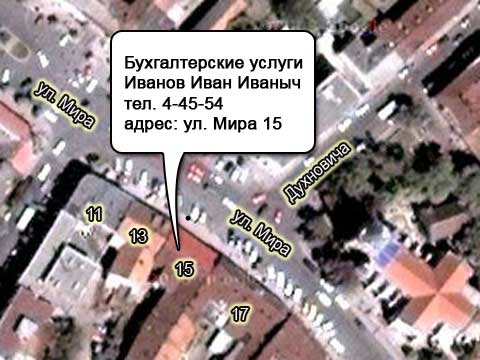

Услуги бугалтера в Мукачево.
Качественное бухгалтерское сопровождение вашего бизнеса.
Ведение бугалтерского учета, налогового учета, начистение зарплат, аудит и прочие бухгалтерские услуги в Мукачево.
Услуги
Контакты
Телефон дом: +38 031-31 1-23-45
Телефон моб: +38 050 123-56-67
e-mail: buhgalter@bugalter-mukachevo.uz.ua
Адресс: Мукачево, Мира д. 15
Карта проезда
Комплексное ведение бухгалтерского и налогового учета
Бухгалтерский центр ”ПрофАспект” производит аутсорсинг бухгалтерских процессов своих клиентов. В настоящее время передача сторонней узкопрофильной организации отдельных бизнес-процессов, не являющихся основными для компании, становится все более популярным способом оптимизации бизнеса. Наиболее часто на аутсорсинг передаются: подбор персонала, бухгалтерский и налоговый учет, маркетинг, реклама, логистика.
Использование аутсорсинга позволяет решить проблемы с привлечением, обучением и удержанием квалифицированного персонала, а также с непрерывностью бизнес-процессов: замена персонала на время отпуска, болезни, обучения обеспечивается поставщиком услуг.
Кроме того, появляется гибкость в управлении ресурсами - компании не нужно беспокоиться о сокращении численности своих сотрудников при изменении ситуации на рынке, перепрофилировании деятельности, уменьшении объемов производства и т.п. Клиент также может избежать расходов на инвестиции в оборудование и программное обеспечение, необходимое для поддержки передаваемых бизнес процессов и на их последующую техническую поддержку, а возможно, и сократить расходы на содержание офиса и аппарата управления.
Восстановление бухгалтерского и налогового учета
Факторы, являющиеся достаточным основанием полагать, что бухгалтерский и налоговый учет в компании требует восстановления:
- отсутствие в компании опытного бухгалтера;
- частая или периодическая смена бухгалтеров в компании, при этом отсутствие исчерпывающих и детальных актов приема-передачи финансово-бухгалтерской документации, расшифровок статей баланса и статей налогового учета на дату передачи;
- недостаточная квалификация и незначительный опыт сотрудников бухгалтерии и делопроизводства компании;
- отсутствие регистрации и каталогизации первичной финансово-хозяйственной документации;
- использование нелицензионных бухгалтерских программ;
- отсутствие контроля директора над деятельностью бухгалтерии.
Если в Вашей компании имеется хоть один из выше перечисленных факторов, то мы советуем Вам обязательно восстановить бухгалтерский и налоговый учет во избежание досадных недоразумений в виде штрафов и пени, которые будут начислены Вам при проведении налоговых и иных проверок.
Стоимость услуг по восстановлению бухгалтерского учета организации определяется индивидуально в зависимости от объема выполняемых работ и включает в себя следующие показатели:
- объем восстановительных процедур;
- объем документооборота;
- наличие первичных документов;
- период восстановления;
- количество поданных уточняющих отчётов
Предварительная цена определяется при встрече, после обсуждения объема работы, степени запущенности учета и сроков выполнения. Окончательная стоимость определяется после полного восстановления бухгалтерского и налогового учета. По результатам проведенных мероприятий в случае необходимости готовится список недостающей первичной документации, обязательный для восстановления (восстановление предприятие производит самостоятельно), производятся корректировки налогового учета с подачей уточненных деклараций.
Ведение кадрового учета
Постановка и ведение кадрового делопроизводства является обязательным направлением работы любой компании, но зачастую работодатель не уделяет этому особого внимания. Многие руководители уже столкнулись с последствиями такого отношения: проверки трудовой и налоговой инспекции, судебные тяжбы, штрафы и т.д. А ведь проблема решается достаточно просто, необходимо лишь профессионально грамотно и компетентно вести документацию, соблюдая требования законодательства Украины.
Мы, специалисты бухгалтерского центра «ПрофАспект», поможем Вам решить любую задачу, связанную с кадровым делопроизводством. Предоставление услуги ведения кадрового делопроизводства может осуществляться на постоянной основе, либо в разовом порядке.
Кадровое сопровождение – это ведение кадрового делопроизводства в полном объеме, в соответствии с требованиями действующего законодательства Украины – т.е. выполнение всех функций инспектора по кадрам Вашей компании специалистом Бухгалтерского центра "ПрофАспект".
Кадровое сопровождение включает в себя:
Оформление кадровой документации:
- приказы по кадрам (в том числе: о приеме на работу, о кадровых перемещениях работников, об увольнении, о предоставлении отпусков, другие приказы);
- заявления сотрудников (в том числе: о приеме на работу, об увольнении, о выдаче трудовой книжки, о выплате компенсаций, о назначениях на другую должность, об изменении оклада, о предоставления отпусков, другие заявления);
- заполнение трудовых книжек;
- ведение журнала учета движения трудовых книжек;
- оформление личных карточек;
- составление должностных инструкций;
- ведение табеля учета рабочего времени;
- составление штатного расписания с учетом классификатора профессий;
- оформление изменений в штатное расписание;
- составление графика отпусков;
- ведение книг учета приказов по личному составу;
- оформление справок с места работы.
Оформление личных дел сотрудников:
- внутренняя опись личного дела;
- личный лист по учету кадров;
- оформление личных карточек.
Консультации по вопросам кадрового делопроизводства по телефону и электронной почте, а при необходимости при личной встрече. Вы можете получить оперативный ответ на Ваш вопрос по оформлению отдельных документов, делопроизводству и документообороту в целом.
Доверьте нам функции своего отдела кадров - и получите следующие преимущества:
- Вам не потребуется нанимать кадрового работника в штат организации, платить ему зарплату, создавать для него рабочее место и программное обеспечение;
- Вы снимаете нагрузку по подготовке приказов и других кадровых документов с секретаря или работника бухгалтерии;
- мы всегда к вашим услугам, не уходим в отпуск, не болеем и не увольняемся;
- мы гарантируем конфиденциальность полученной информации, она предусмотрена договором.
Мы делаем только то, что умеем делать лучше других!
Другие бухгалтерские услуги (вне пакетов)
Если Клиенту нет необходимости заказывать полный комплекс услуг, интересующая его бухгалтерская услуга может быть предоставлена отдельно (например, консультация по бухгалтерскому или налоговому учету, инструктаж персонала по работе с документацией и пр.).
Налоговые консультации - неотъемлемая часть ведения бухгалтерского учета на Вашем предприятии. Ведь законодательные документы очень часто подвергаются изменениям. Тех знаний, которыми Вы владели вчера, может оказаться недостаточно для ведения бизнеса завтра.
Бухгалтерский центр "ПрофАспект" предоставляет для Вас Налоговые консультации разной направленности:
- устные и письменные консультации по проблемным вопросам налогового учета в Украине;
- составление письменных запросов по вопросам налогового законодательства в государственные органы;
- консультации по постановке налогового учета Вашей компании;
- заполнение налоговых деклараций по прибыли, НДС, расчет уплаты единого налога;
- консультации, связанные с налоговой ответственностью за правонарушения налогового законодательства, размеры финансовых санкций в различных ситуациях.
Специалисты нашего центра помогут Вам и Вашей компании в решении широкого круга вопросов, возникающих в результате частого изменения налогового законодательства в Украине.
Предоставление налоговых консультаций может осуществляться на постоянной основе, либо иметь разовый характер.
С радостью станем Вашим надежным советчиком и партнером!
Бухгалтерские консультации - неотъемлемая часть процесса ведения бухгалтерского учета каждой компании, независимо от формы собственности и вида деятельности.
Необходимость в бухгалтерских консультациях особенно остро ощущается при столкновении бухгалтера с нестандартными, нетипичными или незнакомыми для него ситуациями, когда требуется срочно решить какой-либо вопрос, а времени на поиск ответа в различных источниках информации нет.
Мы готовы стать Вашим надежным советчиком и партнером!